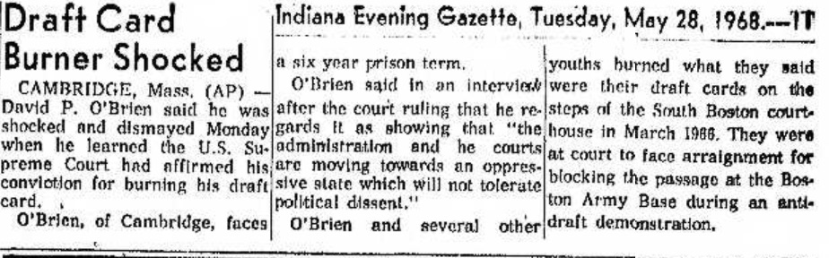

Said by Solicitor General Erwin Griswold
Supreme Court decided on May 27, 1968 (in United States v. O’Brien) that draft-card burning is not protected by the First Amendment and upholds the federal law prohibiting it.
David O'Brien and three friend burned thier draft cards at a Boston courthouse on March 31, 1966 in protest of the Vietnam War. He argued the action was symbolic speech and protected under the First Amendment. At this time, there was a U.S. law reequiring all eligible men tto carry their draft cards with them at all times. To promote this, Congress adopted the Draft Card Mutilation Act of 1965.
This Supreme Court decision made news on many newspapers throughout the country and appeared front page on many of them. The media was able to show many protesters the consequeences you could face if you participate in the burniing of draft cards, yet draft card burning continued.